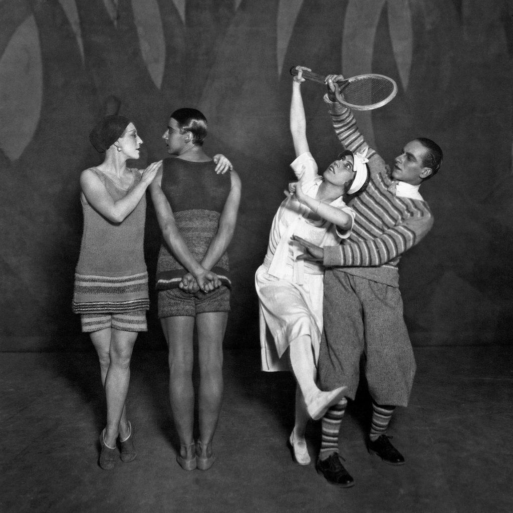
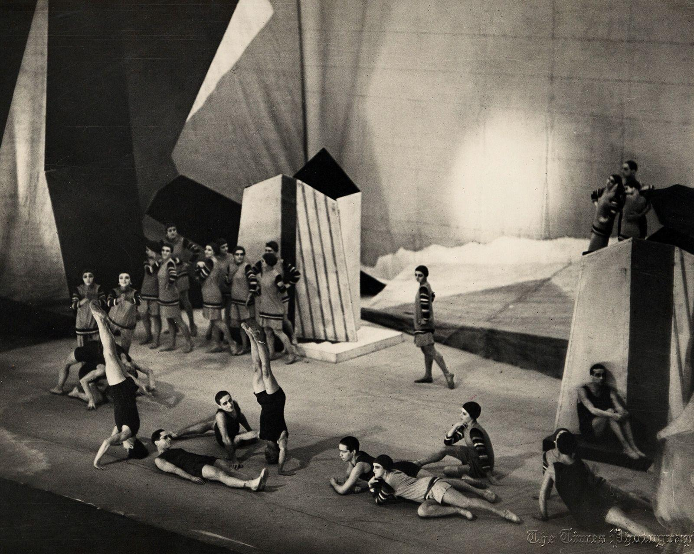
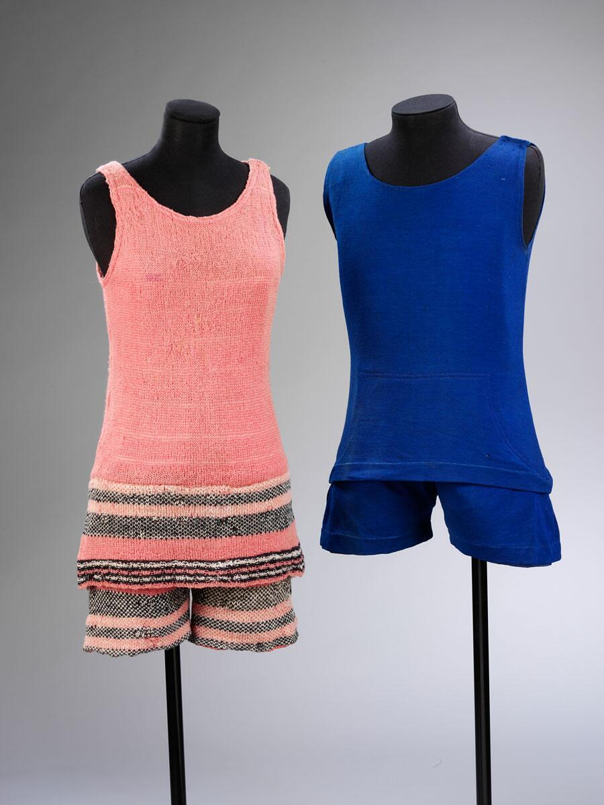
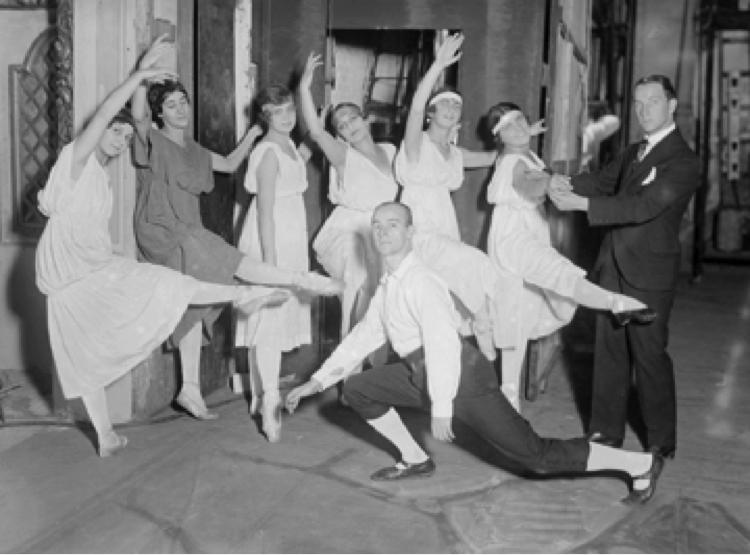
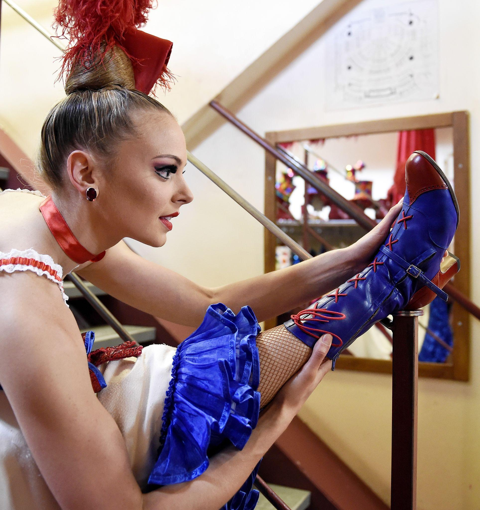
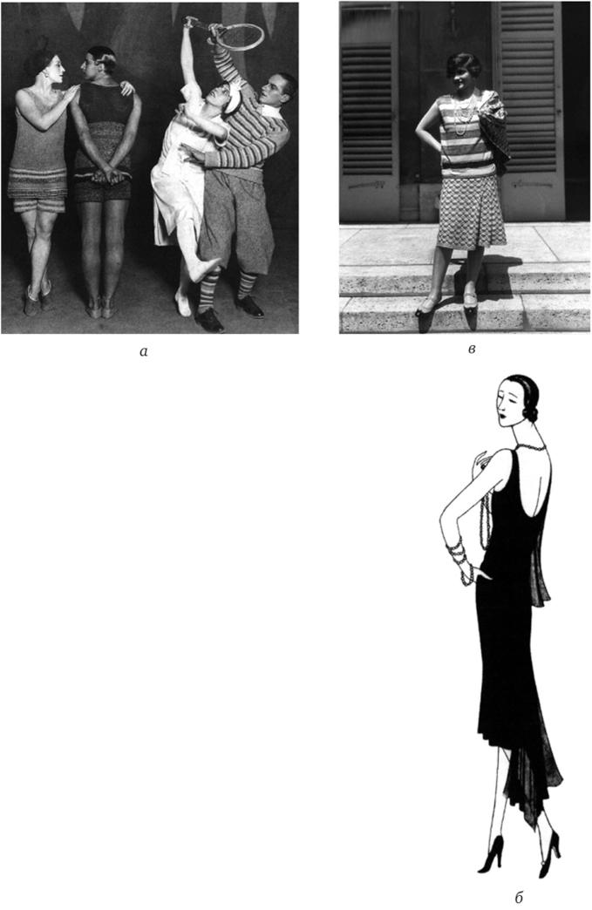

Paris, 1924 — Le Train Bleu, backstage (revised with movement + music)
You know it’s wrong the moment you lift it.
Not the design—the line is perfect. But it holds when it should yield. Under stage light, that will read as hesitation.
“Not that one.”
Coco Chanel doesn’t turn. She doesn’t have to.
You swap it for the softer cut. Jersey. It falls differently in your hands—less like a garment, more like something that’s already in motion.
Backstage
The corridor narrows toward the wings. Dancers pass you in quick intervals—no space for grandeur, only for precision.
You’ve dressed performers before.
You’ve watched them disappear into roles:
skirts that dictate posture
bodices that fix the spine
layers that decide how a body can move
Not tonight.
Tonight, nothing decides for them.
The fabric
You adjust the shoulder—barely a touch.
The cloth responds immediately, settling without resistance.
That’s the test now:
not how it looks when still
how it behaves when the body changes direction
If it lags, it fails.If it clings, it fails.If it announces itself, it fails.
It must follow.
The music starts
From the pit, Darius Milhaud doesn’t build a world.
He sketches one.
Light, quick phrases—urban, contemporary. You catch the edges of jazz rhythms, but they’re filtered, reframed. Nothing heavy enough to anchor the body in one place.
The tempo isn’t driving—it’s encouraging.
It says: move, but don’t commit too heavily. Stay agile. Stay modern.
At the wings
A dancer pauses just long enough for you to check the line again.
No stiffness. No imposed shape.
When she turns, the fabric turns with her—not after, not against.
For a moment, it’s hard to tell where the garment ends and the movement begins.
The realization
You’ve been thinking of this as costume work.
It isn’t.
This is clothing designed for movement—not for display.
The difference is subtle until you see it.
On stage, they don’t transform into characters.
They become versions of themselves that move better.
The stage (heard, then glimpsed)
Laughter—unexpected, light.
Applause that arrives quickly, not ceremonially.
They understand it.
Not as ballet.
As life—improved, accelerated, made visible.
Chanel watches
Still near the wing, she tracks something no one else is tracking:
whether the line holds at speed
whether the silhouette survives motion
whether the audience sees ease
Because ease is the illusion.
The work is hidden.
The connection
You think, briefly, of older ballets—of weight, of resistance, of bodies shaped to meet expectation.
This is the opposite.
Here:
the music refuses to dominate
the clothing refuses to constrain
the body is left to negotiate both
And in that space, something new appears.
The shift
Another entrance. Another adjustment—smaller now, instinctive.
Everything is faster than it should be.
Not chaotic.
Just… unburdened.
The line to carry
As the final dancer passes you, fabric moving as if it already knows the choreography, you understand:
Nothing is holding the body in place anymore.Not the music. Not the clothes. Not even the stage.